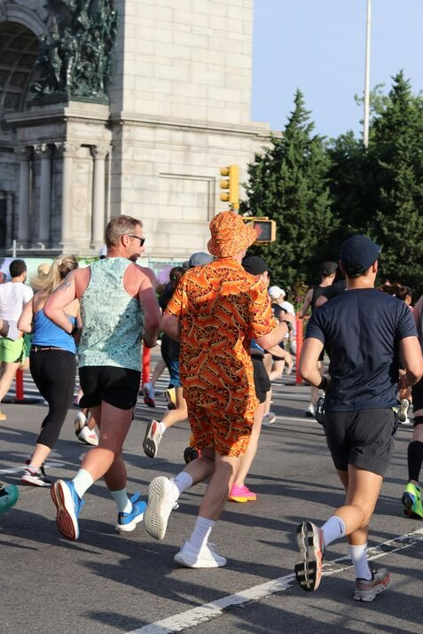

Welcome to Toronto Evening Pacers
Are you looking for a fun, social, and motivating running community? Toronto Evening Pacers is here for runners of all levels in the Greater Toronto Area. Our mission is to promote health, fitness, and social connection through evening runs.
We organize weekly runs at beautiful city locations, offer beginner-friendly routes, and create opportunities to meet new friends and stay active. Join us and experience the joy of running in a supportive community.
0 Members
0 Runs Completed

Next Run Countdown
Run Gallery

Check out our past runs! We love capturing the energy, laughter, and community spirit during each event.
Member Testimonials
"Toronto Evening Pacers keeps me motivated!"
Join hundreds of members who have discovered the fun of evening runs and the joy of meeting like-minded individuals.